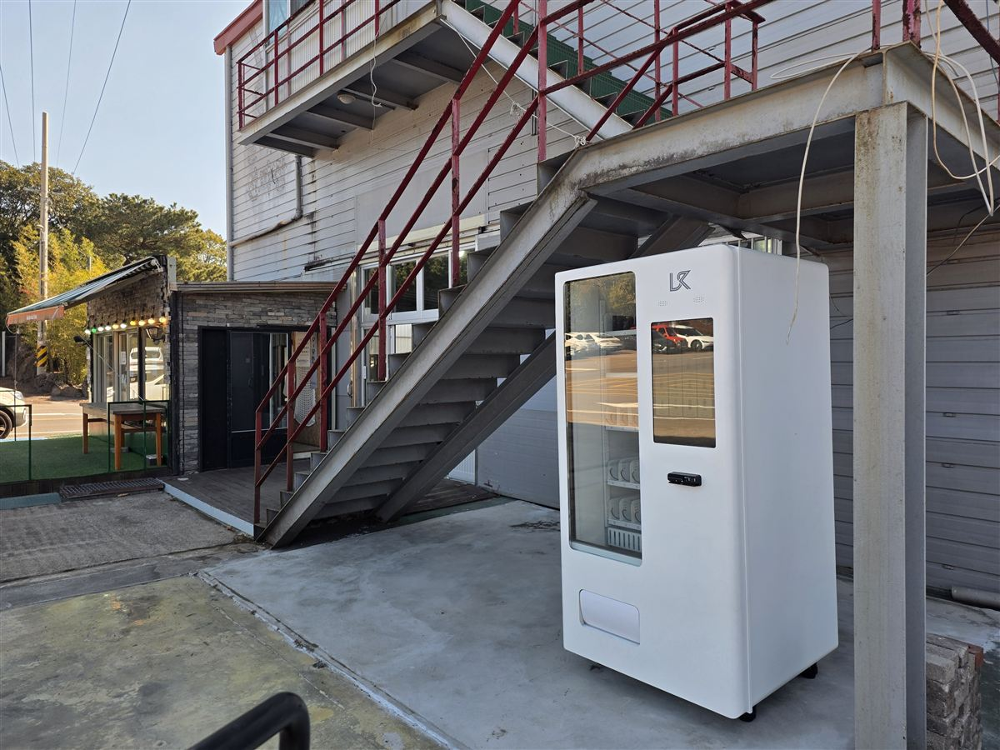

수성구 무인자판기 설치 완료 — 건물 외부 계단 밑 야외 24시간 음료 자판기

자판기는 꼭 건물 안에 있어야 하는 기계가 아닙니다. 사진은 2층짜리 상가 건물의 외부 계단 밑, 처마가 덮어 주는 자리에 냉장 음료 자판기 한 대를 세운 모습입니다. 가게가 문을 닫는 밤에도, 주차하러 들어온 사람에게도 계속 팔리는 자리입니다. 다만 바깥은 안쪽과 달리 자리를 잘못 잡으면 기계가 먼저 상합니다. 그래서 야외 설치는 자리를 고르는 데 시간을 제일 많이 씁니다.
어떻게 구성했나
바깥에 놓을 때 저희가 반드시 보는 것은 네 가지입니다. 첫째 비가 직접 닿지 않을 것. 사진처럼 위층 계단이나 처마가 머리 위를 덮어 주면 가장 좋습니다. 둘째 한낮 직사광선을 오래 받지 않을 것. 햇볕을 정면으로 받는 자리는 냉장 장치가 하루 종일 전력을 더 쓰고, 유리 안쪽에 김이 서려 상품이 안 보입니다. 셋째 바닥이 평평할 것. 야외 콘크리트는 배수 때문에 미세하게 기울어 있는 곳이 많아, 수평을 못 맞추면 음료가 칸에서 제대로 떨어지지 않습니다. 넷째 문을 여는 쪽에 사람이 지나다니지 않을 것입니다.
상품은 바깥 자리에 맞춰 캔·페트 음료 위주로 짰습니다. 과자나 초콜릿은 여름 낮 기온과 겨울 밤 추위를 번갈아 맞는 자리에서 포장이 상하기 쉬워, 야외 기계에는 넣더라도 비중을 줄입니다. 대신 생수·이온음료·커피 칸을 늘려 두었습니다. 밖에 있는 자판기는 목이 말라서 멈춰 서는 사람이 주 고객이라, 종류를 늘리는 것보다 잘 나가는 품목을 두 칸씩 붙여 두는 쪽이 매출이 꾸준합니다.
앱으로 원격 관리, 설치는 반나절
야외 자판기의 진짜 걱정은 재고가 아니라 "지금 멀쩡한가"입니다. 안에 있는 기계는 직원이 오가며 보지만, 바깥 기계는 아무도 안 봅니다. 이 자판기는 칸별 남은 수량과 기계 상태가 휴대폰 앱에 숫자로 뜹니다. 문이 열렸는지, 냉장이 돌고 있는지, 결제가 되고 있는지를 사무실이나 집에서 확인할 수 있어서 밤중에 나가 볼 일이 없습니다. 매출도 칸별로 쌓여서 계절이 바뀔 때 품목을 갈아 끼울 근거가 됩니다.
결제는 카드와 간편결제만 받습니다. 바깥에 두는 기계에 현금을 받게 해 두면 잔돈을 채우러 수시로 나가야 하고, 야간에 기계를 건드릴 이유를 만들어 줍니다. 설치에 필요한 건 바깥까지 빠져 있는 220V 콘센트 하나와 기계 폭만큼의 벽면입니다. 외부 콘센트가 없으면 전기 작업이 하루 더 붙지만, 콘센트만 있으면 배송·수평 조정·상품 적재·시험 결제까지 반나절이면 끝납니다.
구매·임대·렌탈 모두 가능
야외 자리는 잘 되는지 겪어 보기 전에는 모릅니다. 같은 길가라도 사람이 서는 쪽과 그냥 지나가는 쪽의 차이가 크기 때문입니다. 그래서 바깥 설치는 임대나 렌탈로 한 대 시작해 보고 자리가 맞는다 싶을 때 구매로 넘어가시는 분이 많습니다. 반대로 주차장이나 공장 마당처럼 이용하는 사람이 이미 정해져 있는 자리는 처음부터 구매가 총비용으로 유리한 편입니다. 어느 쪽이든 설치비는 무료이고 세금계산서도 발행됩니다. 놓으려는 자리 사진과 머리 위가 덮여 있는지, 외부 콘센트가 있는지 두 가지만 알려 주시면 되는 자리인지 먼저 봐 드립니다.
수성구 무인자판기 상담은 무료
학원가와 아파트가 붙어 있는 범어동·만촌동·황금동·두산동, 주택가가 넓은 지산동·범물동·상동·중동·수성동·파동까지 수성구 전역에 방문합니다. 수성구는 낮에는 학원·사무실로 사람이 모이고 밤에는 주거지로 돌아가는 구조라, 같은 기계라도 길 하나 차이로 팔리는 시간대가 완전히 달라집니다. 상가 건물 바깥이나 주차장 입구처럼 가게 문을 닫은 뒤에도 사람이 지나는 자리, 그리고 사무실 건물 1층 로비, 학원 휴게 공간, 체육시설, 무인 스터디카페, 공장·창고 마당처럼 사람은 머무는데 파는 사람이 없는 자리면 한 대로 시작할 수 있습니다. 현장을 보고 자리와 품목까지 같이 잡아 드리며, 상담과 견적은 무료입니다.
관련 검색어: 수성구무인자판기 · 수성구무인자판기설치 · 수성구자판기임대 · 수성구음료자판기 · 범어동무인자판기
※ 사진은 H포스가 시공한 설치 사례이며, 글에 적힌 지역의 현장 사진은 아닙니다.
📞 수성구 무인자판기 설치 상담 010-6832-1994